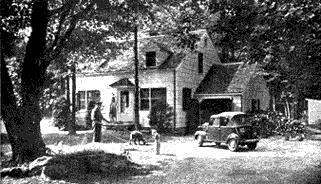
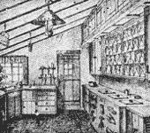
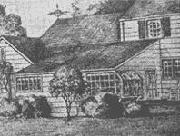

Plan A Harvest Kitchen With Your Wife
By the Mother Earth News editors
March/April 1970
NOT long after Ed and I moved into our country house I began to realize my department was going to be overcrowded.
One look at our big quick freezer, the cream separator, the honey extractor, the pressure canner - and another look at our small kitchen and we were somehow reminded of trying to get a grand piano into a phone booth!
You see, when you begin to grow a good part of your food you need a "factory" to process it and preserve it. And you just live differently. The ordinary kitchen-dining room combination of the conventional house simply doesn't fit.
What you need is a streamlined, modern little food-conserving set-up, combined with the charm and warmth of Grandmother's kitchen.
We went to John Whitney, an architect who specializes in country houses, with our idea. Together we planned out every detail of food preservation, preparation and serving; added such things as the greenhouse window (for winter herbs, flowers, and spring plant starting), a desk and record-keeping corner and a rocking chair corner or relaxation, darning and sewing and general coziness.
And now we have our "Harvest Kitchen." It has turned out lovelier and more practical than our fondest dreams. Believe me, if you want to make cooking, canning and freezing a joy for your wife build her a "Harvest Kitchen!"
You can add it to any house; you can put it into new-house plans; sometimes you can convert your present dining room and kitchen into this needed "Harvest Room" or "Harvest Kitchen" as we call it.
In our "Harvest Kitchen" (see pictures at right) we have such features as a greenhouse window, special milk-handling and cooling equipment, quick-freezer cabinet, hardwood chopping block for meat and poultry dressing, vegetable-cleaning sink, glass-enclosed preserved and canned food compartments, garbage-handling arrangement, dry food storage space, cooking, canning and work space, etc.
Isn't it astounding that such a room has never been designed, not even for a farmhouse?
|
 OUR HOUSE: This snapshot shows our house which is the so-called ""Cape Cod"" style. We found that the ordinary-size kitchen cramped our canning, freezing, and cooking so we planned the addition of an up-to-date version of the old ""summer kitchen."" |
 OUR HOMESTEAD: Another snapshot six months later showing how our suburban house has been turned into a homestead by adding a ""Harvest-Room."" The garage was remodeled -note the greenhouse window. Also, we - improved the front entrance and added picket fence at left |
 Here is one end of a special room every ""HaveMore"" home needs very, very much. The big roomy old farm kitchen was its ""ancestor"" - yet it is completely new in design and conception. We call it the ""Harvest Kitchen."" |
|
 This architect's sketch from PLAN FOR A HARVEST-KITCHEN is one of six showing various ways a ""Harvest-Room"" may be added to on existing house or planned for if you are building a new house. |
|
|